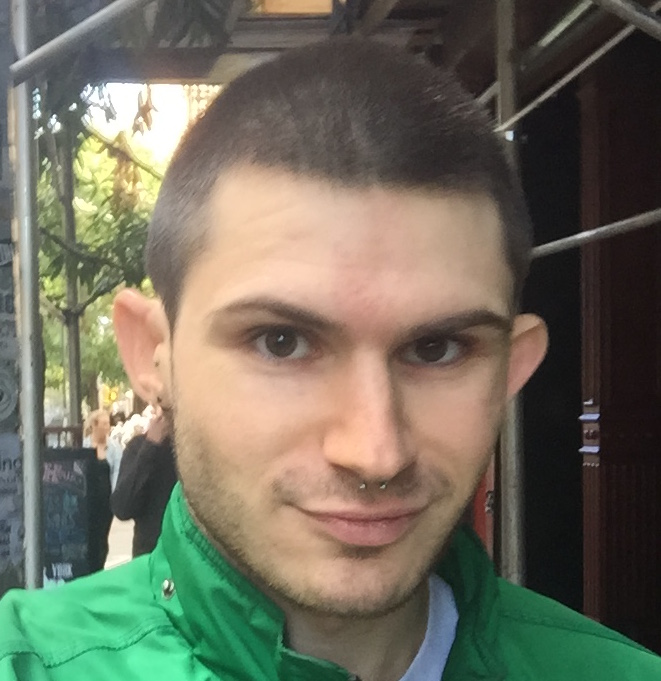
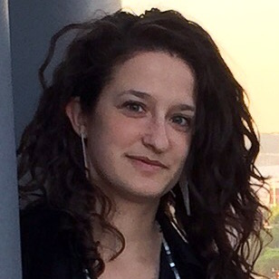
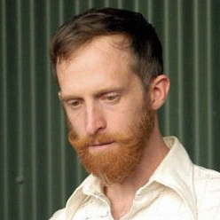

After a bad car accident in the early 2010s, Lily Bo Shapiro found herself at an ultimate low. While Lily was recovering, her prayers were answered when a friend approached her about the AmeriSHOWZ business opportunity. Eager for a new path, Lily joined AmeriSHOWZ on the spot. She went to work immediately, but it wasn't until a visit with the AmeriSHOWZ Co-Founders where Lily decided to give it her all. “They didn't judge my past and were willing to answer every question I had about my new future with AmeriSHOWZ.” Lily quickly found that the key to finding success on the outside is to personally develop on the inside.Today Lily consistently encourages positive thinking and personal growth to her team. Lily’s goal in AmeriSHOWZ is to help as many performance spaces as possible keep their doors open, and even more so, help as many people as possible deal with the current economic condition. “I want to give people hope and I know that by sharing AmeriSHOWZ, this is the vehicle that will get them there.”
LILY BO SHAPIRO, CIRCLE OF CHAMPIONS MEMBER, Performer.
For Alex Rodabaugh, discovering AmeriSHOWZ in 2012 was much more than a smart career move. “I was 24 years old!” he recalls. “First, it forced me to grow up, to be responsible. I learned integrity, character, how to be sincere, honest, and to be reliable.” He embraced the mission of AmeriSHOWZ to help others and its commitment to lifelong learning. “Once you stop growing, you start dying,” he says, “AmeriSHOWZ is simply a self-development course with a compensation plan attached to it.”Today Alex is a Senior Vice President and grows his team from his home in NYC. He’s able to work from anywhere in the world on his own terms. “I’ve been able to throw away my alarm clock and wake up when I’m finished sleeping,” he says.The joy Alex gets from his own personal freedom is the reason he shares the AmeriSHOWZ opportunity with others. “I can bless the people I care about most,” he says, “AmeriSHOWZ has taught me how to be a servant leader, how to pour into others and not focus on myself.”
ALEX RODABAUGH, CIRCLE OF CHAMPIONS MEMBER, Choreographer and Performer.
As a way to make money during school, Ashley began working for a direct selling company. While the company lacked leadership, vision and integrity in her opinion, it made Ashley appreciate the opportunities that came with combining direct selling and performances.When a top producer for AmeriSHOWZ offered her the chance to meet the AmeriSHOWZ Co-Founders, Ashley jumped at the chance. “What appealed to me was the possibility of real residual income.”Since joining the AmeriSHOWZ family, Ashley now teaches others how to maximize their own capabilities by acquiring patrons. She attributes her success to being coachable, distancing herself from negative people, keeping the end result in mind, and having specific goals that are both short-term and long-term.“I try never to think of what I will do next week or next month, but always today,” she said. “That has always helped me get closer to my long term goals.”
ASHLEY HANDEL, CIRCLE OF CHAMPIONS MEMBER, Performer.

John Hoobyar has been an entrepreneur his entire life, and never worked for a boss. Involved in a previous direct sales company, John worked his way to become one of the top income earners – but it soon all came crashing down. The company was on its way under, which meant the opportunity to change countless lives, as well as his own, would no longer be available.When he looked at the AmeriSHOWZ opportunity, it made complete sense to join. He liked that the four AmeriSHOWZ Co-Founders had been around since day one, taking part in the expansion year after year. He was also intrigued that AmeriSHOWZ continuously made a commitment to giving back. With a long track record of success, John knew this was the company for him.John plans to help grow future leaders within his organization and to help change more and more lives through this solid opportunity. His five simple steps he encourages people to follow are: Get in, Get qualified, Get to training, Get patrons, and get patron getters on your team to do the same. Then do it all over again!
JOHN HOOBYAR, CIRCLE OF CHAMPIONS MEMBER, Performer.

When Aviva Novick learned about AmeriSHOWZ she was a full-time graduate student and working part-time. Aviva found time to attend a presentation and saw something different in AmeriSHOWZ - they didn't look at her degrees, her age, or her background.The company offered a great business opportunity for people with a desire to work hard. Plus, because it involved performances, Aviva felt she didn't have to learn how to sell or learn about all the details of each product because performances are something that people engage with every day.Aviva is most appreciative that her AmeriSHOWZ business allows her to focus on balancing business, art and family. She treasures her time at her studio and at home.“It’s little moments you can’t take advantage of because you have to go to work,” she says. “Being at home, you decide when you want to work and when you don’t want to work. My office is from my kitchen to the living room.”
AVIVA NOVICK, CIRCLE OF CHAMPIONS MEMBER, Scenic Designer.

Andy Kuncl is living proof that building your AmeriSHOWZ business is not easy, but the hard work is all worth it. Before joining AmeriSHOWZ, Andy worked multiple jobs as a full time college student, accruing debt along the way. He began searching for a new opportunity and a chance to start over. “I was looking for a home, a solid company that had stood the test of time and where I could build a true long-term residual income.”When introduced to AmeriSHOWZ, Andy was amazed at the company’s business model and how you could change your life by providing essential performance services. When he found AmeriSHOWZ, he knew he found an opportunity that fit well with his unshakable work ethic. He truly believes in the AmeriSHOWZ system and has a passion for providing phenomenal products to his patrons, as well as being a leader to his growing team.“AmeriSHOWZ has given me the best gift of all; time with my family and an atmosphere that values personal growth above all else. For that, I am forever grateful.”
ANDY KUNCL, CIRCLE OF CHAMPIONS MEMBER, Sound Designer.

Amanda K Ringger remembers the day it all made sense. “I had a rough start in AmeriSHOWZ at first,” Amanda says. “But I kept learning, stayed coachable, kept working and followed the system by acquiring customers.”Being a leader now in AmeriSHOWZ, Amanda’s journey is about helping countless others achieve success through the AmeriSHOWZ System by acquiring customers. “Life is no longer about me,” Amanda says. “Now a greater purpose is calling me to help other people achieve the same thing. It’s my mission to empower people to own their life.”
AMANDA K RINGGER, CIRCLE OF CHAMPIONS MEMBER, Lighting Designer.